浅谈傅里叶分析
学这个不是因为OI，只是为了更深刻地了解一下合成器原理。
傅里叶分析可以分为傅里叶级数和傅里叶变换
傅里叶级数
级数就是把数列的每个项依次用加号连接起来得到的函数。
如果你要公式的话：
给定一个周期为 $T$ 的函数 $x(t)$，那么它可以表示为无穷级数：
$x(t)=\sum_{k=-\infty}^{+\infty} a_{k} \cdot e^{j k\left(\frac{2 \pi}{T}\right) t}$
其中，$a_{k}$ 可以按照如下方式计算：
$a_{k}=\frac{1}{T} \int_{T} x(t) \cdot e^{-j k\left(\frac{2 \pi}{T}\right) t} d t$
以上就是傅里叶级数的公式，显然这对我们这些蒟蒻来说过于晦涩难懂了。
那么傅里叶级数到底是什么东西？
按照傅里叶的理论，任何满足条件（狄利克雷条件）的周期函数都可以用三角函数构成的无穷级数来表示。
这种级数就叫做傅里叶级数。
傅里叶变换
傅里叶变换，表示能将满足一定条件的某个函数表示成三角函数（正弦和/或余弦函数）或者它们的积分的线性组合。（百度百科）
注意傅里叶变换和傅里叶级数两者的区别：
任何满足条件（狄利克雷条件）的周期函数都可以用三角函数构成的无穷级数来表示。（傅里叶级数）
将满足一定条件的某个函数表示成三角函数（正弦和/或余弦函数）或者它们的积分的线性组合。（傅里叶变换）
傅里叶级数强调的是周期函数，而傅里叶变换针对的是非周期函数。
傅里叶级数是将周期函数转化为非周期离散函数，而傅里叶变换将非周期函数转化为非周期连续函数。
理论知识只需要了解到这里就够了（对于理解合成器的原理），接下来聊一聊它的实际用处。
应用
用一个最典型的波形来举个例子。
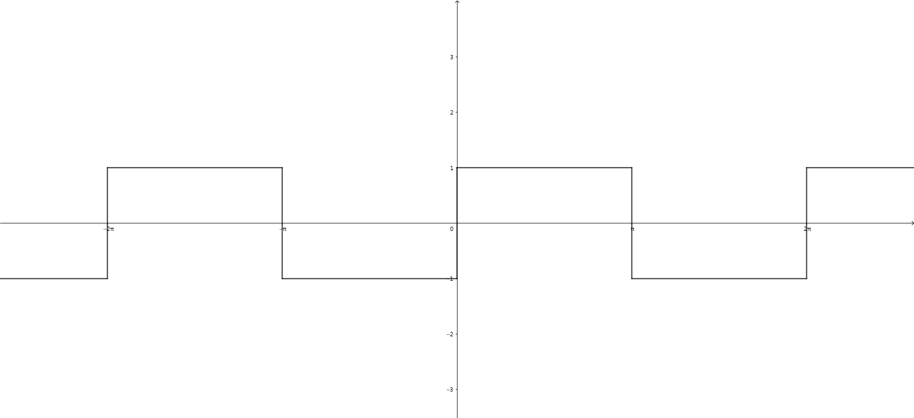
按照上文所说，这个方波是可以经过傅里叶分析变成一系列的正弦波的，那么如何做到呢？
我们看看普通的一个正弦波：
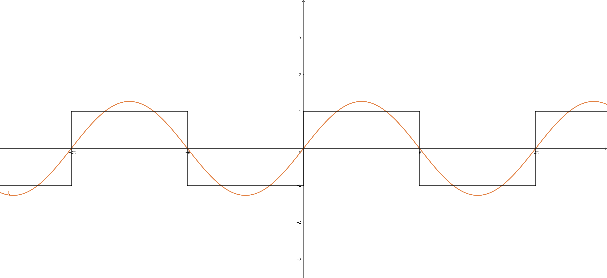
如果给这个正弦波再加上一个正弦波（紫色的是新加的正弦波）：
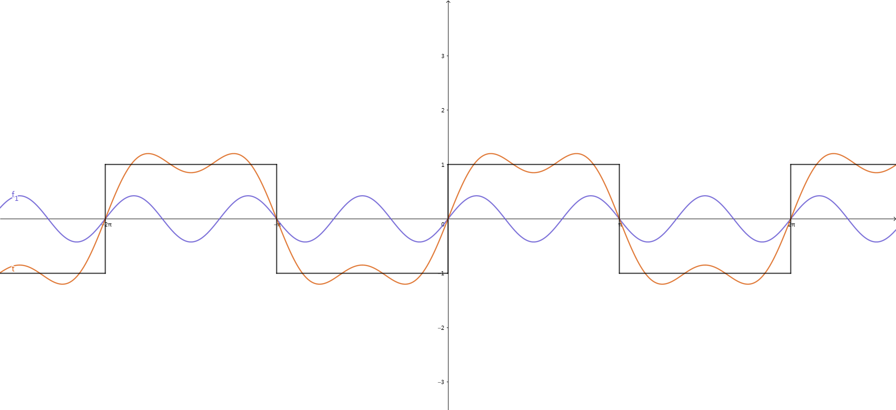
再加：
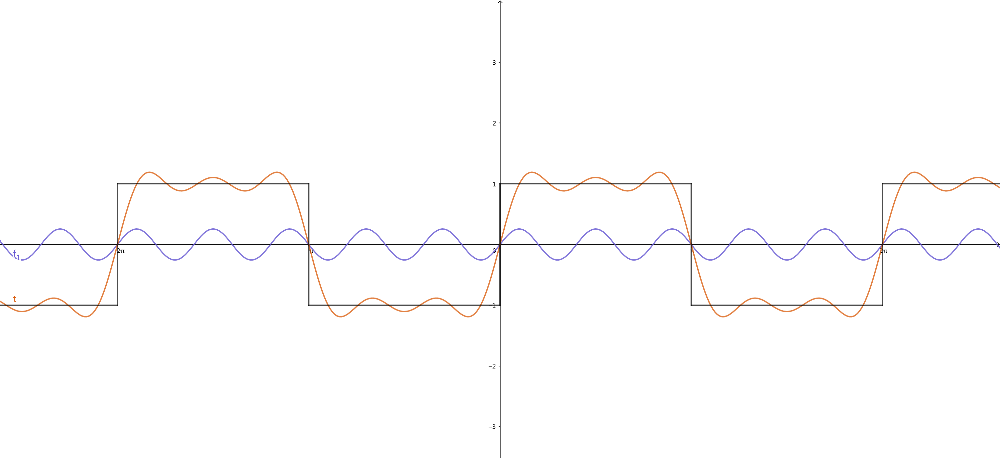
不停的加：
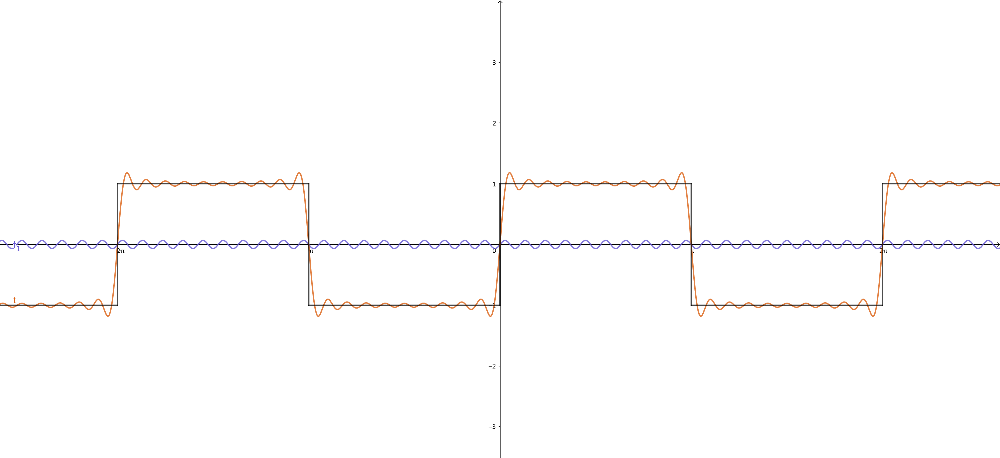
我们发现，在加了很多很多正弦波以后，它变成了这样：
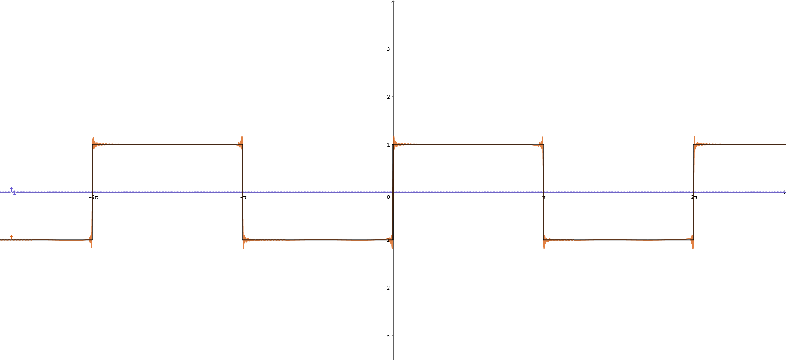
如果写成公式，方波是这样的：
$f(x)=\frac{4}{\pi} \sum_{i=1}^{\infty}\frac{1}{2i-1}\sin((2i-1)x)$
也就是说，方波可以分解成无穷多个正弦波。
我们可以通过很多正弦波来叠加出方波，拓展开，可以用很多正弦波叠加出任何符合条件的复杂波形。
有很多合成器都是根据这个理论实现的（比如最基础的加法合成器和减法合成器）。
顺便结合合成器讲讲一些合成器和傅里叶分析中重要的概念：时域、频域、相位域。
打开合成器（这里用Serum做演示），看到OSC A一栏，注意到现在用的是默认的锯齿波。
我们现在看到的这个：
这个就是该波形的时域图像。
具体点讲，我们将图像按照时间的变化画出就能得到这么一张时域图像。
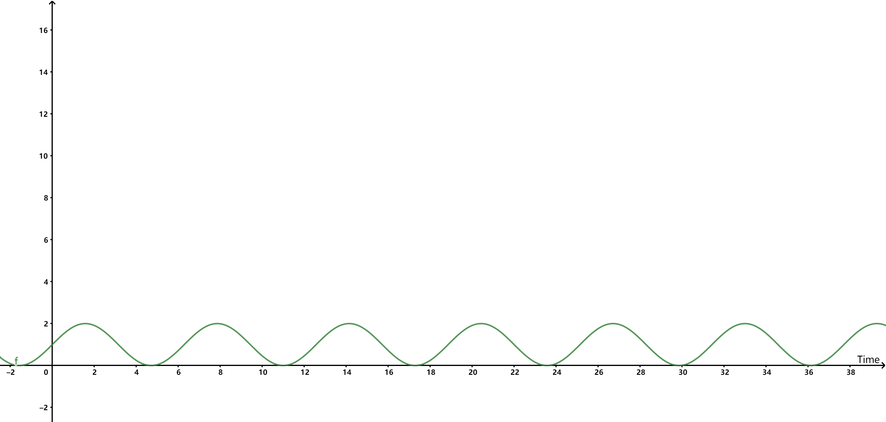
严谨地说，时域（Time domain）是描述数学函数或物理信号对时间的关系。（百度百科）
接下来点击编辑按钮进入波形的编辑界面：
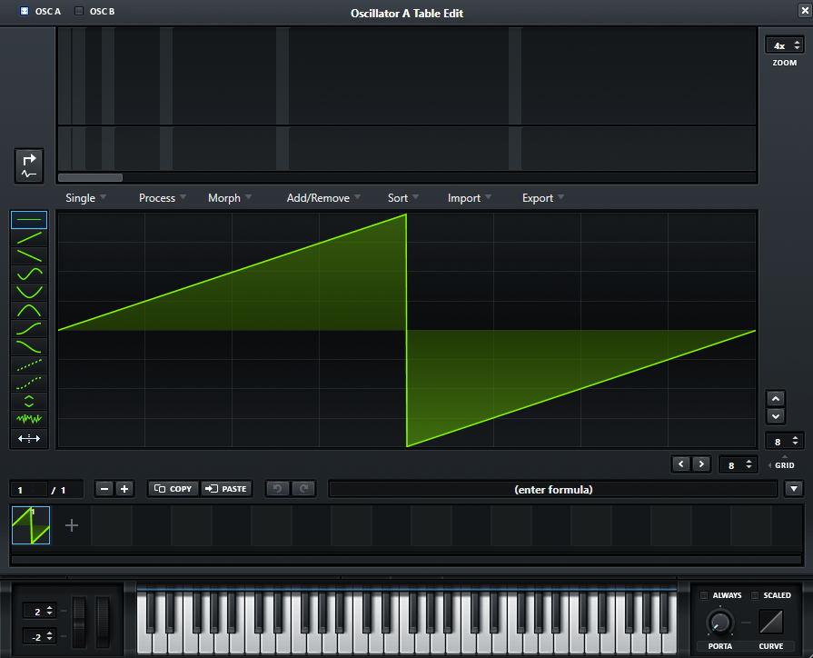
看到上半部分：
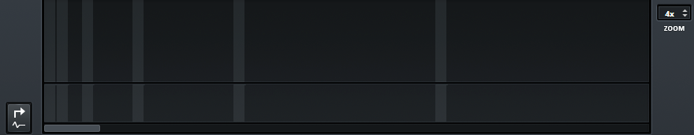
左下角有个箭头的按钮，那个按钮叫 “Wave to FFT”，即将波形进行 快速傅里叶变换。
快速傅里叶变换 (Fast Fourier Transform), 即利用计算机计算离散傅里叶变换（DFT)的高效、快速计算方法的统称，简称FFT。（百度百科）
我们点击该按钮后，电脑就会根据下半部分的波形计算出这个：
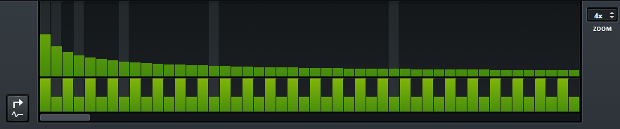
这个就是这个锯齿波在频域上的图像，这张图也叫频谱。
严谨地讲，频域（frequency domain）是描述信号在频率方面特性时用到的一种坐标系；而频谱是频率谱密度的简称，是频率的分布曲线。（百度百科）
掏两张知乎巨佬Heinrich的图：
频谱是：
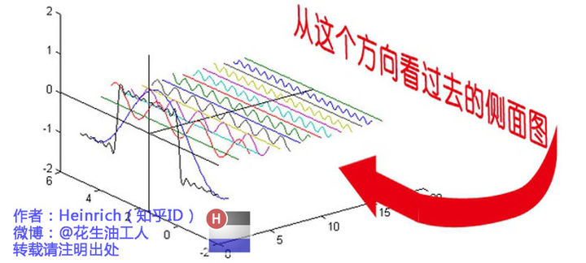
整合一下：
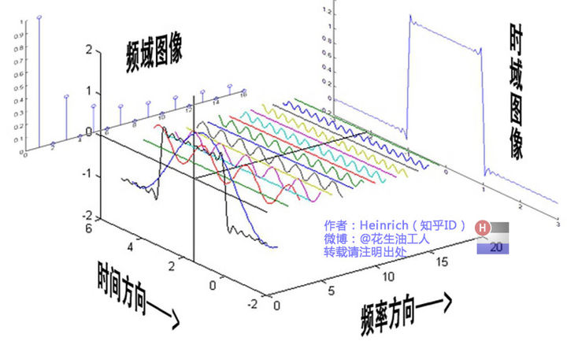
接下来回到开始的主界面：
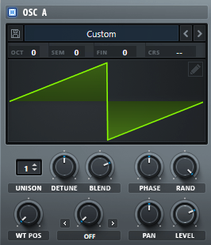
我们看到下面编辑栏里有个旋钮叫 “PHASE”，意思是 “相位”。
相位(phase)是对于一个波，特定的时刻在它循环中的位置：一种它是否在波峰、波谷或它们之间的某点的标度。（百度百科）
简单来说相位就是用来确定一个波在循环中的位置的东西。
对于一个正弦波：
$y=A\sin\left(\frac{2\pi}{T}t+\varphi_{0}\right)$
$A$ 是该波的振幅，$T$ 是该波的周期，括号中的 $\frac{2\pi}{T}t+\varphi_{0}$ 就是这个波的相位，而 $\varphi_{0}$ 就是这个波的初相。
1 |
|
对了，推荐韩昊巨佬（知乎Heinrich）的文章，链接在下面。
参考：
- 韩 昊 的文章《傅里叶分析之掐死教程》
- 百度百科